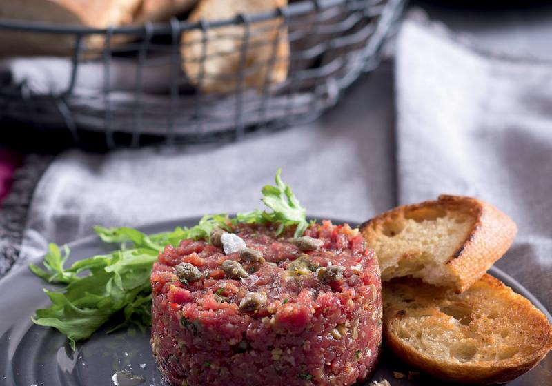

Tatarak

Description
U either love it or hate it. Raw, scraped beef and some seasoning.
Ingredients
- Beef
- Seasoning (salt and pepper as basic stuff)
- Raw egg
Steps
- Scrape the beef
- It takes a long time
- Season it
- Crack the egg on top
- Enjoy with topinka